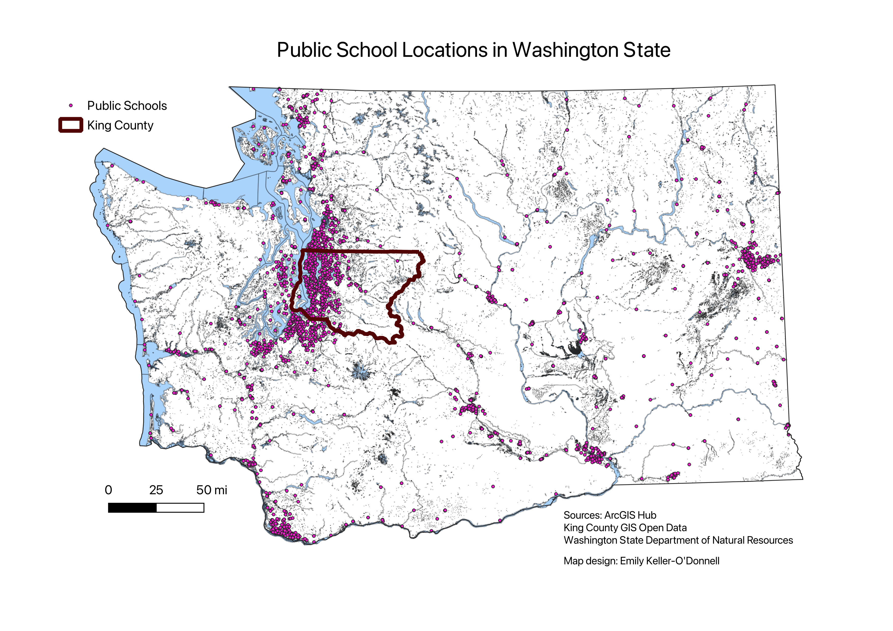
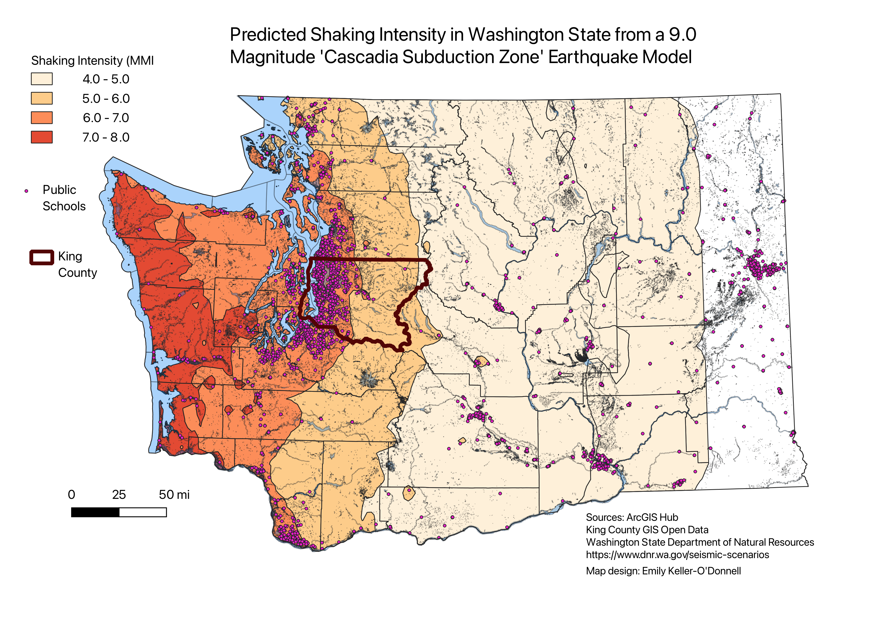
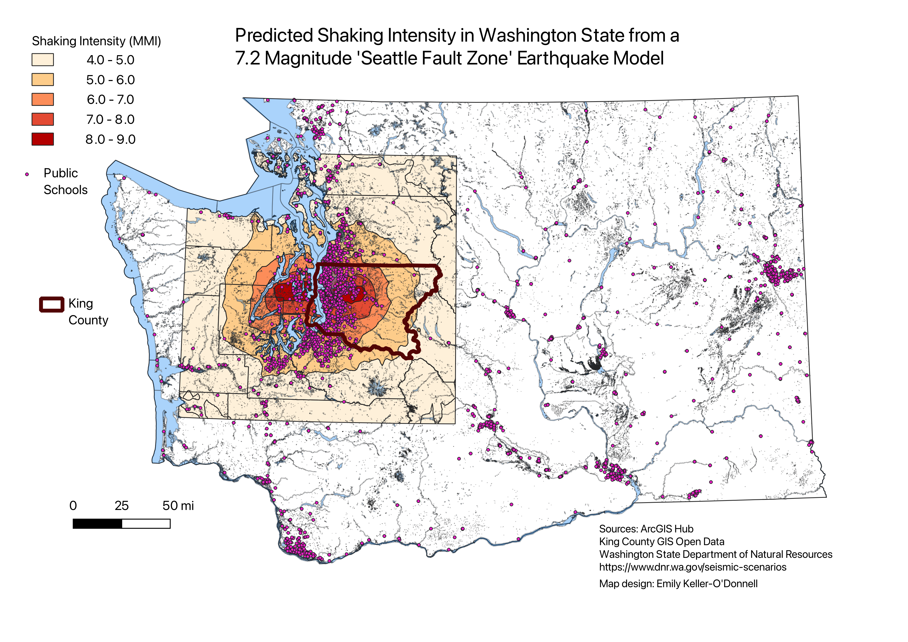

As Students in Washington State Head Back to Class, Information About the Seismic Readiness of School Buildings is Hard to Find (draft)
As the start of the upcoming school year approaches, many students in Washington State will be attending schools that are known to be unsafe in an earthquake. Older schools, particularly those built before the 1970s, face the highest risk of collapse in an earthquake. The state is vulnerable to multiple fault lines, including the Cascadia Subduction Zone located in the Pacific Ocean, which can produce megathrust earthquakes of 9.0 magnitude or higher, and the Seattle Fault, which can produce earthquakes of up to 7.5 magnitude in the center of the city. Both fault lines are known to produce earthquakes hundreds of years apart.
While multiple efforts are underway to better track, upgrade and replace high risk school buildings statewide, the process will take years and is expected to cost billions of dollars to complete. As parents make final decisions about where to send their children for the start of the school year, state data about the upgrade status of individual schools is often complex to obtain, and in some cases contradictory between different government entities.
King County, the most populous county in the state, has 2.2 million people and 523 public schools, which make up 20 percent of all public schools in the state, according to the Washington Geospatial Open Data Portal. The western portion of King County, which has the county's greatest population density, is predicted to experience 6.0-9.0 Modified Mercalli Intensity (MMI), a measurement of local ground shaking that is distinct from earthquake magnitudes that are measured along a fault line, in two scenarios shown below. In a Seattle Fault Zone earthquake, some of these schools face a double threat from an earthquake and possible resulting tsunami from Puget Sound and other local waterways. The maps below show the predicted seismic impact zones for the Cascadia Subduction Zone and the Seattle Fault Zone, highlighting King County. [These two earthquakes are overdue]
One in five Washington State public schools are located in King County, which has 523 schools. The Seattle School District, the largest school district in the state, has more than 55,000 students enrolled.



Which schools have the greatest risks? The data is unclear
While seismic assessments and upgrades move forward, obtaining current information about each of thr 2,552 individual state public schools presents a complex challenge to parents. In King County, nearly 35,000 students attended 60 public schools for preschool to 12th grade with one or more "very high" risk buildings last year. The seismic risk ratings, which range from "low" to "very high", were provided by the Washington Office of Superintendent of Public Instruction (OSPI) in response to a public records request in July 2023. As data collection is ongoing, ratings were provided for about 880 out of 1,992 listed schools. The data shows about 200 schools rated "very high" risk, and about 70 schools rated "high" risk, although some have already been renovated or rebuilt. The OSPI assessments take many factors into account when determining the overall risk rating for each school site. Each of the seismic impact zones shown in the maps above contain school buildings with a range of ratings that may depend on building age, construction type, soil density, and other metrics.
The map below shows the 60 schools in King County that are designated in the OSPI data as having "very high" seismic risk, with no seismic renovation recorded. Multiple additional schools marked as "very high" risk that were found to have renovation or reconstruction work currently underway, or that have already been reconstructed or closed, were omitted from the list below. In addition, Seattle Public Schools maintains a list of seismic upgrades that have been made to district schools, including some of those listed below. It is outside the scope of this project to confirm whether any additional schools rated as "very high" risk by OSPI and appearing in the may below may have renovation or reconstruction work underway or completed that is not reflected in the data.
Taking a Closer Look at School Construction
According to the state's School Seismic Safety Project final report published in June 2021, buildings that are most at risk of collapse in an earthquake are: 1. Buildings made with unreinforced masonry (URM) before the 1940s, and non-ductile concrete buildings (without seismic upgrades) constructed before the mid-1970s; 2. Buildings constructed prior to 1975 out of reinforced masonry and wood frame materials. Data collected in 2018 for the Washington URM Dashboard identified 219 confirmed or suspected URM schools, including 34 confirmed URM public schools. The Seattle City Council passed a resolution in December 2021 to establish a framework for a mandatory retrofit ordinance for the estimated 1,100 URMs in the city, but this ordinance does not apply to the surrounding cities shown in the map above.
The OSPI data shows 168 school sites statewide with at least one of three URM construction types: URM bearing walls, and concrete or steel frames with URM infill walls. It is unclear which of these three construction types presents the highest risks. URM buildings are sometimes identifiable via an alternating brick pattern with a narrow brick width every 5-6 rows (though some URM buildings are constructed with clay tiles), and by low or flat arched windows, historical records, and on-site assessments.
Several "very high" risk schools from the map above are shown in more detail below.

Garfield High School in Seattle, constructed in 1923, recently celebrated its 100th anniversary (the school originally opened in 1920 at a temporary location). In the OSPI data, the school is listed as having "concrete shear walls", with "very high" seismic risk in the two main building areas that were assessed, and "low" risk in the performing arts center following renovations in 2008. Image capture: Jul 2017 @ 2023 Google

Echo Lake Elementary in Shoreline, just north of Seattle, has a "very high" seismic risk in two out of six assessed building areas, both of which have “concrete frame buildings with URM infill walls”, according to the OSPI data. The building was constructed in 1952. Photo: Emily Keller-O'Donnell

Fall City Elementary in Snoqualmie Valley has a "very high" seismic risk in its "covered play area" constructed in 1962, and "low" risk in four other assessed building areas, according to the OSPI data. In this case, the visible brick construction does not provide a clear conclusion of risk status in this section of the school. Image capture: Apr 2023 @ 2023 Google
The Github page for this project is available here.